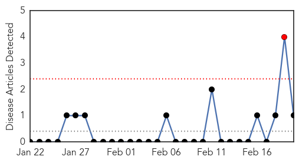
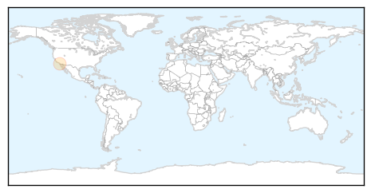
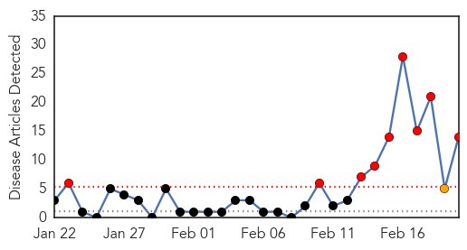

Mold/Fungal
30-Day Web Trend
1 alerts, 0 warnings

30-Day Twitter Trend
0 alerts, 0 warnings

Article Locations
Article Confidences

Top Articles:
Top Tweets:
-
No tweets found for Feb 20, 2015
Hepatitis
30-Day Web Trend
9 alerts, 1 warnings

30-Day Twitter Trend
0 alerts, 0 warnings

Article Locations

Article Confidences

Top Articles:
- 0.943
- Uproar Over Hepatitis Outbreak in Armenia
- 0.940
- Infections from berries expected to rise
- 0.902
- Frozen berries linked to Hep A
- 0.792
- Finger-pointing, lawsuits likely to follow 'superbug' scare
- 0.792
- Finger-pointing, lawsuits likely to follow 'superbug' scare
- 0.787
- Finger-pointing, lawsuits likely to follow 'superbug' scare
- 0.752
- New hope for hepatitis C, an often hidden disease
- 0.733
- Lawyer: Teen infected by 'superbug' struggling to survive
- 0.699
- Finger-pointing, lawsuits likely to follow 'superbug' scare
- 0.606
- Berries off Aus shelves after Hep A scare
- 0.603
- Hygiene 'likely cause' of berries hep A
- 0.597
- Hep A watch on children at centre
- 0.564
- The berries Hepatitis A scare stems from a bigger issue.
- 0.535
- Raspberries common link in hep A outbreak
Top Tweets:
-
No tweets found for Feb 20, 2015